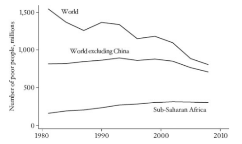

# World Inequality
## EC 399: Economics of Inequality
## Spring 2017
### Additional reading
Both optional:
- Acemoglu: "Introduction to Modern Economic Growth", chapter 1
- [https://ourworldindata.org/global-economic-inequality](https://ourworldindata.org/global-economic-inequality)
### How does growth affect inequality?
- Does inequality go up or down as countries get richer?
- Kuznets: Inequality goes up, then goes down

Source: World Bank
### Growth and inequality
- In the cross section it does not appear the wealthier countries have lower inequality
- We would like know how inequality evolves as countries develop
- We don't have great data on this!
- Piketty, Saez, Zucman (and others): World Wealth and Income Database
### Growth and inequality
- Growth doesn't appear to make top incomes diverge among developing countries
- What about low income? Are people "left behind" by development?
- We can look at poverty rates

Source: Deaton (2013)
### Poverty
- Poverty has fallen dramatically at a global level
- Poverty reductions in China and India (35% of global population) are important cause
- Poverty in sub-Saharan Africa has not changed much
### Between-country inequality
- Global inequality has been falling
- Within-country inequality has been (relatively) constant
- Between country inequality must be falling
- Poor countries must be growing faster than rich countries
### Exponential growth
"Rule of 70"
- Imagine income grows at an exponential rate g% per year
- Income will double in 70/g years
- USA: g=2.5% $\rightarrow$ average income doubles every 28 years (the average person has twice as much income as their parents at the same age)
- China: g=7% $\rightarrow$ average income doubles every 10 years
- Lucas (1988): "Once one starts to think about [economic growth], it is hard to think about anything else."
### Solow growth model
- Workers consume part of their income, save the rest
- Savings are capital investments for firms (banks loan out savings)
- Capital is productive, makes workers more efficient $\rightarrow$ wages increase
- Workers save more, causing capital to increase, etc...
- Diminishing marginal returns to capital: Eventually additional capital will not have much of an effect on productivity, growth levels off
- "Steady state:" Capital and income grow at a constant rate, determined by technological growth
### Convergence
- Technology is easily transferable, so steady state growth should be the same in every country
- Countries with below steady-steady state capital should grow faster than countries at steady state
- Poor countries should grow faster than rich countries
### Conditional convergence
- Countries that are similar to each other tend to converge in income
- What are those similarities?
- Politics, education, institutions, technology, etc
### Summary
- Decreases in inequality at global level driven by India and China
- Solow model predicts growth of middle income countries will eventually slow down (converge)
- Poor countries may be "left behind" unless they figure out how to grow
- Low growth rates in poor countries means that the gap between rich and poor will get larger over time